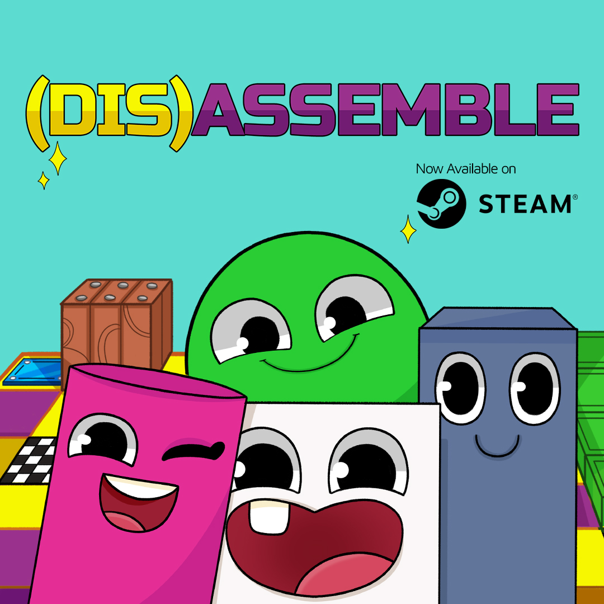
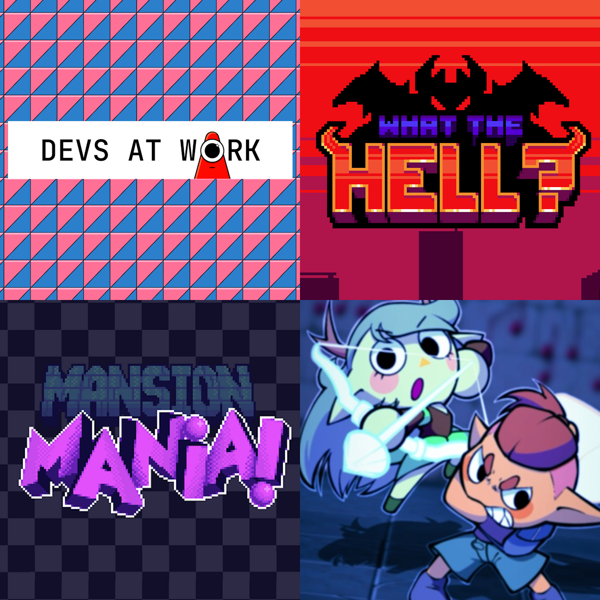
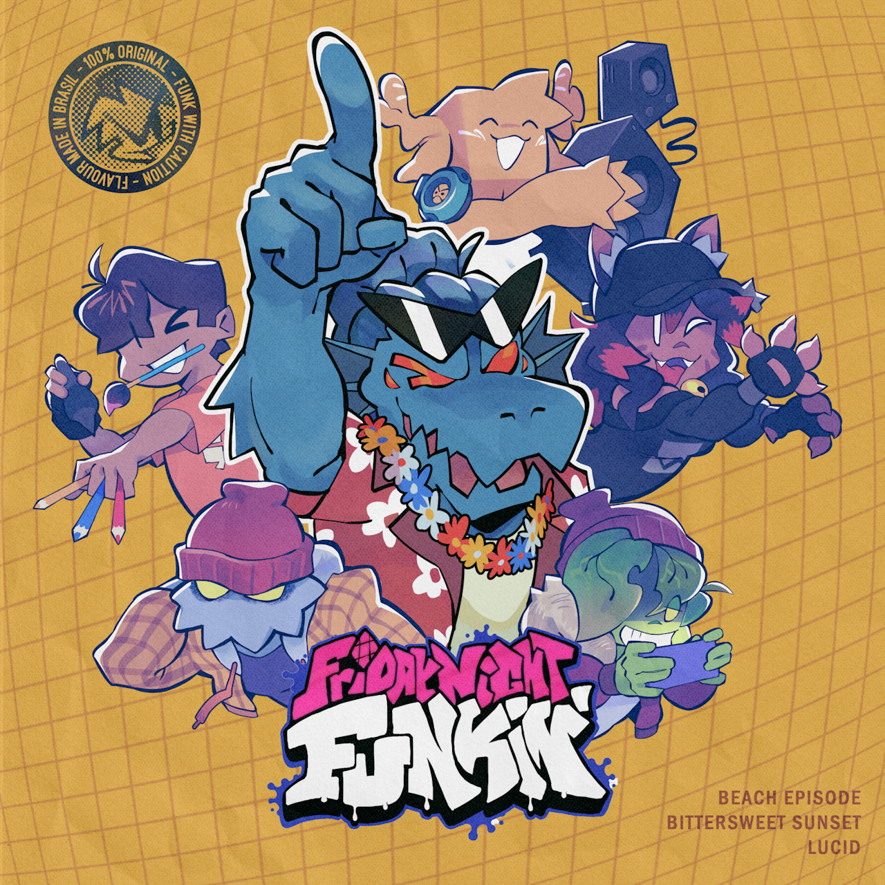
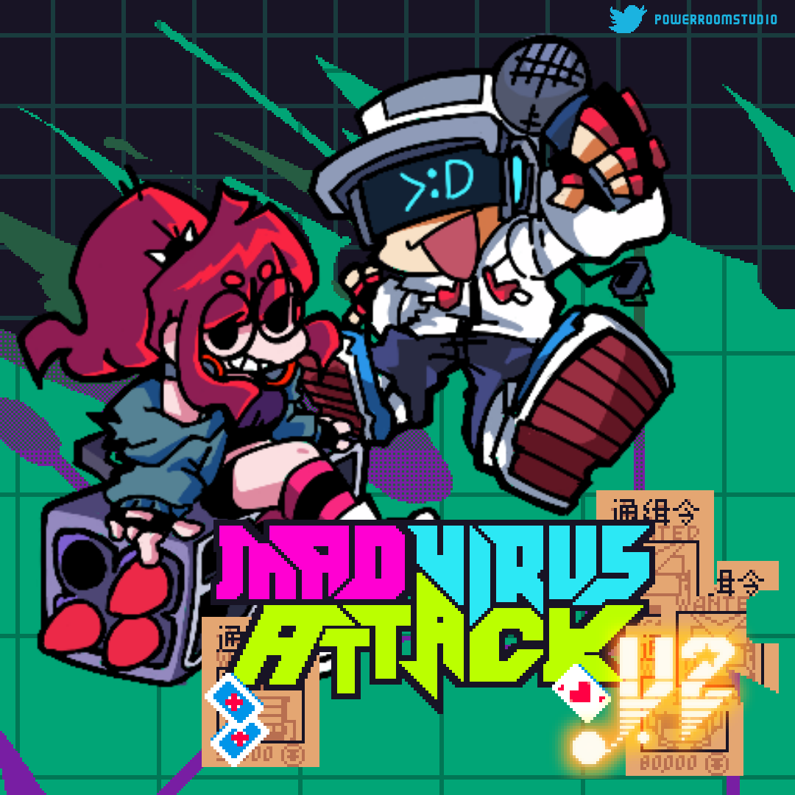

My name is Gustavo Lindenberg Pacheco.
(Also known as "AguaCrunch" or "Agua" online.)
I'm a 23-year old from São Paulo, Brazil. I specialize in digital music arrangement and composition, as well as programming for video games or in general.
In this webpage you may find examples of my work, as well as information about me and my experiences.
LANGUAGES
- English (Fluent)
- Portuguese (Fluent, Native)
- Spanish (Intermediate)
INTERESTS
- Game Design, Game Programming
- Soundtrack Production, Sound Design, Animation Soundtrack Scoring, Arrangements, Remixes
EDUCATION
- Griggs International Academy (2018-2020) - Dual Diploma High School Program (Brazilian & American)
- Insper (2022-2025) - Bachelor's degree in Computer Science
- Instrument lessons (2012-2020) - Drums & Bass Guitar
SKILLS & ABILITIES
- Game Development: Unity, Godot
- Sound & Music Production: FL Studio 2025, Audacity, Melodyne, Perfect Pitch
- Creativity, teamwork, problem-solving, time-management
- Programming Languages: Python, Java, JavaScript, SQL, C++
- Web Development: React, Flask, Spring Boot
- Data Science & Machine Learning: Pandas, scikitlearn
Music
Here you may find some of my musical works, including original compositions, remixes and arrangements, "High-Quality Rips" and game-inspired works.
You may also visit my YouTube channel and SoundCloud profiles, both of which have tracks I have not shared here, such as this one!
(Dis)assemble Original Soundtrack
I have composed the soundtrack for the game (Dis)assemble, a cute and colorful puzzle game about combining sentient pieces to change how they move. Developed by Dragon Fruit Studio, all tracks were composed to dynamically switch between each other, with a playful style inspired by music from Snipperclips.
(Dis)assemble - SteamGamejams
Some tracks I have made for different Gamejam competitions. A bit of varying music styles, including lounge with some chiptune touches, retro action, Halloween jazz and playful battle music.
Devs At Work - Itch.io | WHAT THE HELL? - Newgrounds | Mansion Mania - Itch.io | Story Beats - Itch.ioFriday Night Funkin' - Mano's Beach Hangout OST
 (Art by @pb_lauro)Some original compositions and remixes for my upcoming Friday Night Funkin mod, titled "Manos Beach Hangout". The overall style is more acoustic and inspired by Brazilian genres, but ultimately it boils down to ideas I thought would be fun.
This kind of "vocals" is common for all my Friday Night Funkin works, though they may sound vastly different between tracks. And in case you are wondering, that voice in all the tracks is my own.
Mad Virus Attack OST
 (Arte por @Rusron1 and @SERIZYU)To wrap up Friday Night Funkin content, we have some of the soundtrack for the Mad Virus Attack mod, which I direct with my friends Rusron and Zack. Again, several genres have been used, including chiptune, electro swing and jazz.
Mad Virus Attack V2 - GameJoltMisc.
(Drawing by @pb_lauro)Other tracks that did not fit any of the previous categories, mostly remixes.
Experiences & Projects
Here are some experiences and projects.
DATA SCIENTIST INTERNSHIP AT CONEXT PATNERS (2025)
I have worked as a Data Scientist for Conext Partners during the first semester of 2025, streamlining their data structures and collection, pre-processing data as well as helping create Machine Learning models.
ANDROID TRANSLATOR & WRITING ASSISTANT APP (2024)
As a partnership with IBM, developed an Android app to assist young literate speakers of Nheengatu, an indigenous language, with everyday activities.
CYBERSECURITY STUDENT ORGANIZATION (2024)
Joined InsperSec, a cybersecurity student organization at Insper, where I acquired advanced knowledge on the topic.
“PROFESSORES EM MOVIMENTO” SCHOOL COMPARISON SYSTEM (2023)
Alongside students from Insper, developed a digital platform to visualize and compare data from schools in São Paulo, which aimed to assist the Department of Education with teacher job rotations.
ALBUM RELEASED ON MUSIC STREAMING PLATFORMS (2023)
Composed and released Mad Virus Attack V2 (Original Game Soundtrack), the soundtrack for an indie game project, on major music streaming platforms including Spotify, YouTube Music and Deezer.
GAME JAM MAGALU (2022)
Winner of the Game Jam event presented live at Gamescom LATAMs BIG Festival 2022, with the game Devs At Work: A Game Under Construction.
EXPLO SUMMER PROGRAM AT YALE UNIVERSITY (2019)
Immersive experimentation program for several fields of study at Yale University - New Haven, CT.
Contact
- Email: pachecoglp02@gmail.com
- GitHub: https://github.com/gustavolp1
- LinkedIn: https://www.linkedin.com/in/gustavo-lindenberg/
- Phone: +55 (11) 95300-3645